В данном уроке мы разберем терминологию родственных связей тегов. Каждый тег, в зависимости от положения в HTML коде
может быть либо родителем, либо потомком, либо и тем и другим одновременно.
Рассмотрим для примера следующий код:
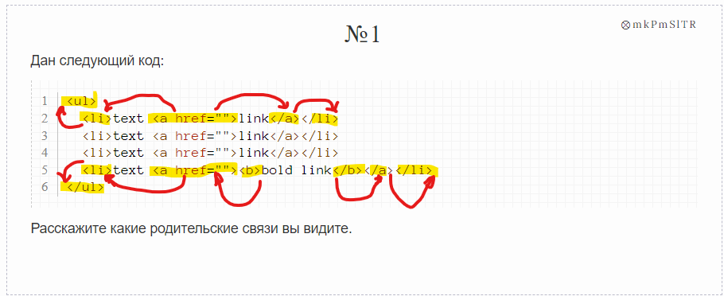
В данном случае мы можем сказать, что теги i в этом коде являются потомками тегов li, а также являются потомками тега
ul . При этом для каждого нашего тега i тег li является непосредственным родителем (отцом), а тег ul - дедушкой.
Что можно сказать про наши теги li? Они являются потомками тега ul и при этом сами являются родительскими для тегов i.
Ну, а тег ul является родителем тегам li и тегам i. При этом для тегов li наш тег ul - непосредственный родитель.
Пусть у нас есть абзац, а в нем какой-то текст в теге i:
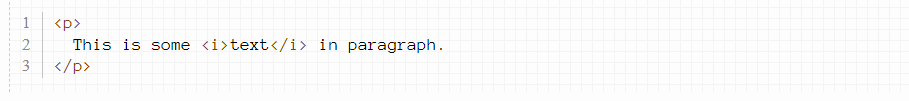Давайте покрасим абзацы в красный цвет:
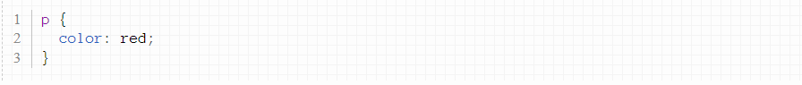В результате покрасится не только текст абзаца, но и текст тега i:
This is some text in paragraph.
Все дело в том, что свойство color наследуется. Это значит, что если у родительского тега задан какой-то цвет, то такой
цвет будет и потомков. Наследуются не все CSS свойства, но многие (из тех, что вы уже знаете - все наследуются).
При желании, однако, можно переопределить свойство родителя, задав селектор потомка. Например, давайте абзацу зададим
красный цвет, а курсиву - голубой:
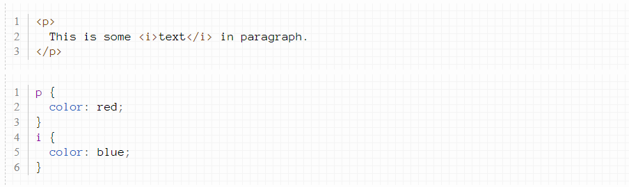
Результат выполнения кода:
This is some text in paragraph.
Порядок селекторов в CSS коде в таком случае не имеет значения. Если переставить местами селектор i и селектор p, все
будет работать так же:
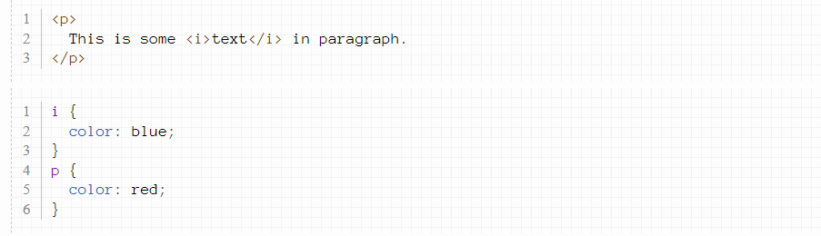
Результат выполнения кода:
This is some text in paragraph.
Иногда может возникнуть следующая ситуация: вам нужно сделать одно и то же с разными тегами, например, покрасить все
заголовки h2, h3 и абзацы в красный цвет. В этом случае вам придется написать что-то вроде такого:
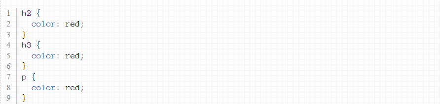
Однако, существует способ сделать это немного короче: селекторы тегов можно объединять через запятую и CSS код
применится к ним всем одновременно. Приведенный выше код можно переписать покороче таким образом:
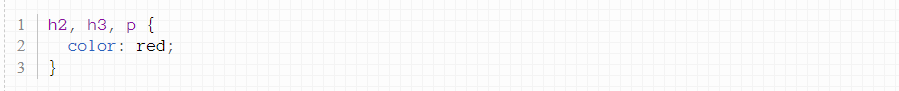
h1, h2, h3{
text-align: center;
}
Бывает такое, что часть свойств некоторых селекторов одинакова, а часть - отличается. В следующем коде, например,
заголовки и абзац имеют красный цвет, но у абзаца кроме этого есть еще свойства:
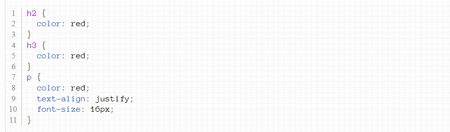
В таком случае можно сгруппировать повторяющиеся части, а то, что не повторяется, записать отдельно:
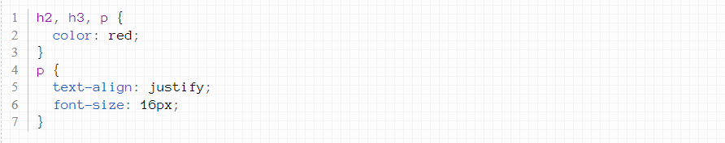h1, h2, h3{
text-align: center;
}
h2 {
color: blue;
}
h3 {
font-size: 16px;
color: red;
}
h1, h2, h3 {
text-align: center;
color: red;
}
h3 {
font-size: 16px;
}
Пусть у нас есть список ul и список ol:
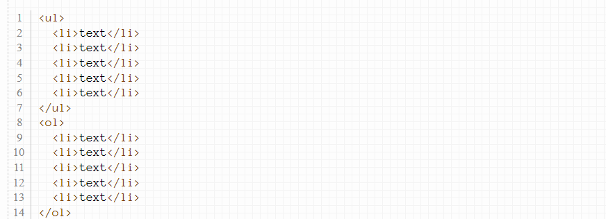Давайте покрасим теги li в этих списках в красный цвет:
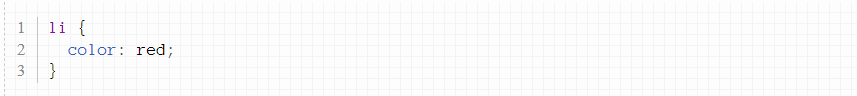Пусть теперь мы хотим покрасить теги li списка ul в красный цвет, а теги li списка ol - в зеленый.
В этом случае нам поможет селектор потомков. Он позволяет выбирать теги по их родителю. Для этого нужно указать селектор
родителя, а через пробел - селектор потомка. В нашем случае селектор ul li выберет все теги li из списка ul, а селектор
ol li - выберет все теги li из списка ol. Покрасим их в нужные цвета:
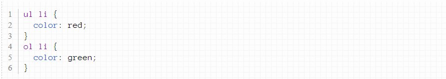
Селектор потомков не обязательно должен состоять из двух селекторов тегов - их может быть любое количество, записанное
через пробел. В следующем коде, например, выбираются все теги i, находящиеся внутри тега li, которые в свою очередь
находятся внутри тега ul:
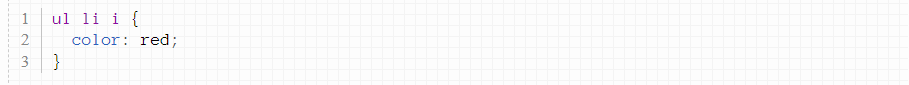Покрасьте в красный цвет курсив из тегов ul, а в зеленый цвет - курсив из тегов p.
paragraph text italic
paragraph text italic
Покрасьте в красный цвет курсив, находящийся внутри тега b, который в свою очередь находится внутри тега p.
paragraph text bold italic
paragraph text italic
Пусть у нас есть следующий код:
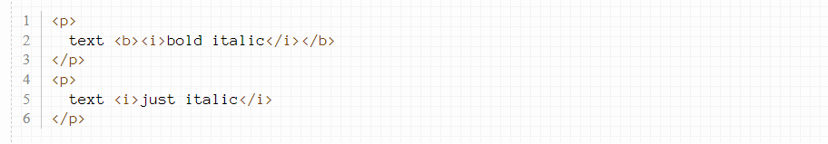Пусть мы хотим выбрать все теги i, являющиеся потомками абзацев. Сделаем это:
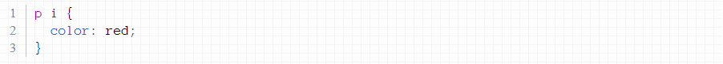text bold italic
text just italic
Давайте теперь выберем те теги i, которые являются непосредственными потомками наших абзацев. В этом нам поможет
дочерний селектор .
Чтобы понять, как им пользоваться, давайте сравним его с селектором потомков. Вот так: p i - мы выберем все курсивы
внутри абзацев, а вот так: p i - только курсивы, являющиеся непосредственными потомками абзацев.
Давайте применим этот селектор к нашему HTML коду:
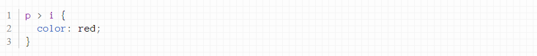
text bold italic
text just italic